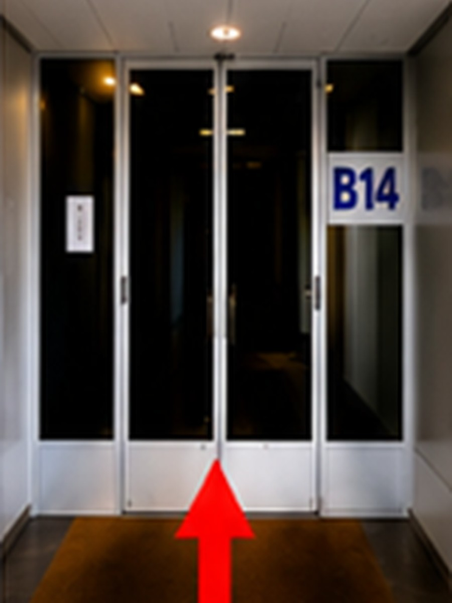
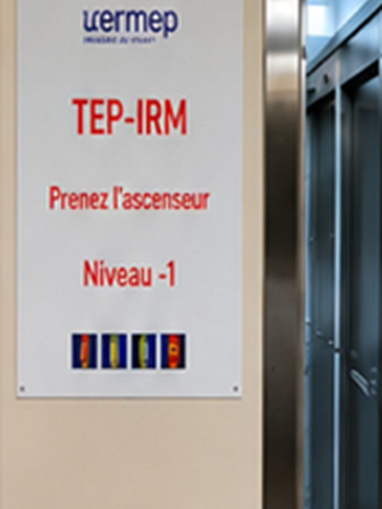
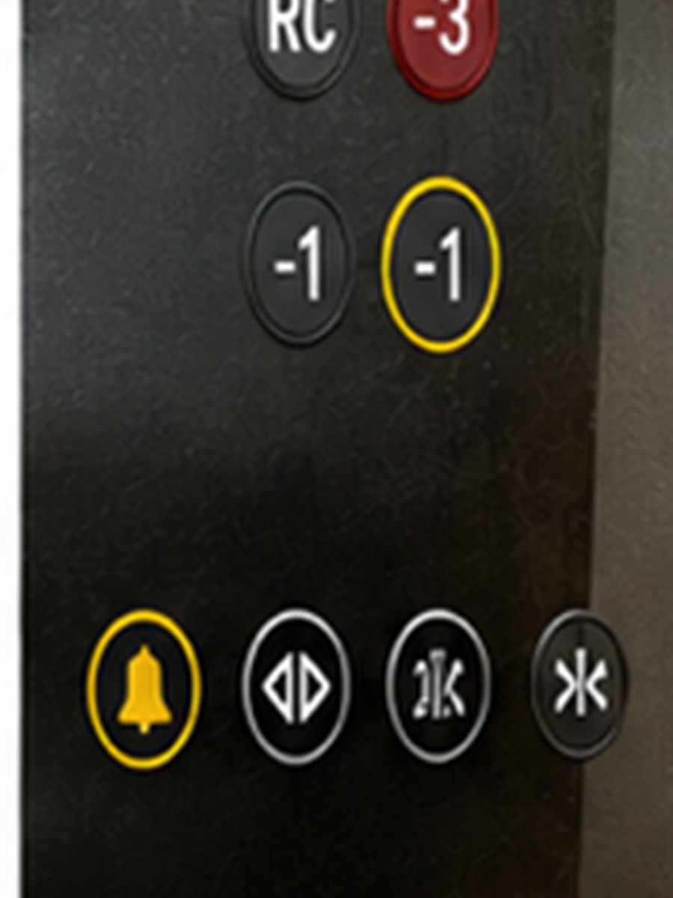
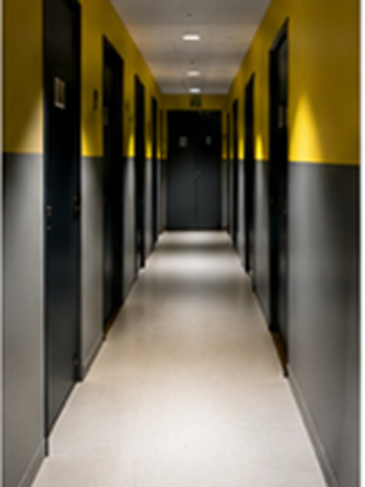
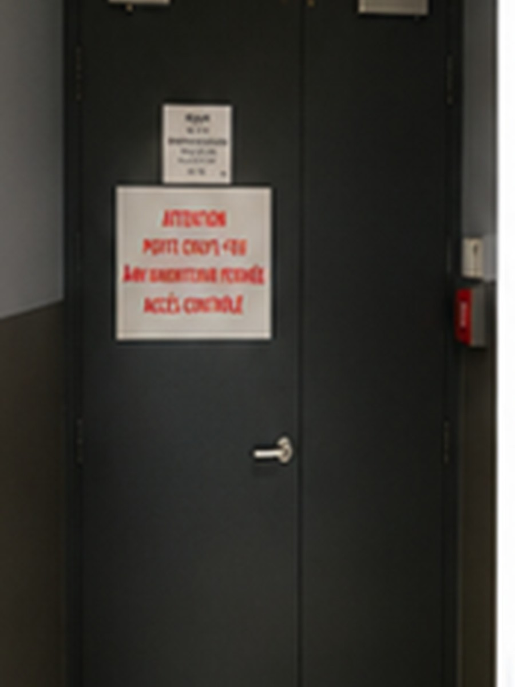
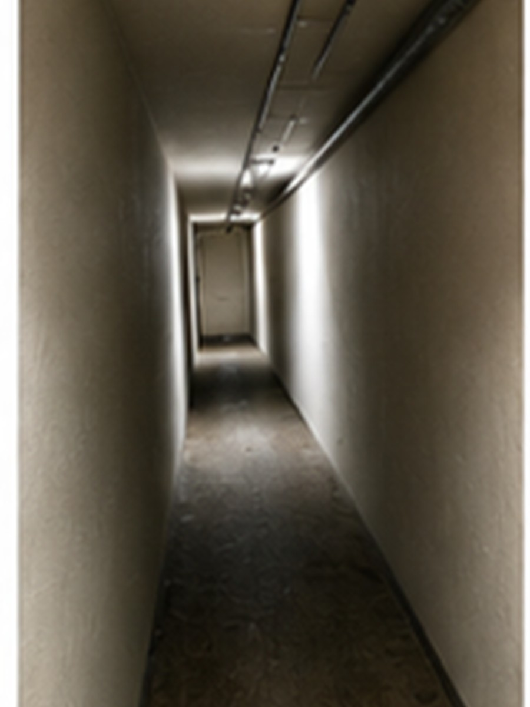
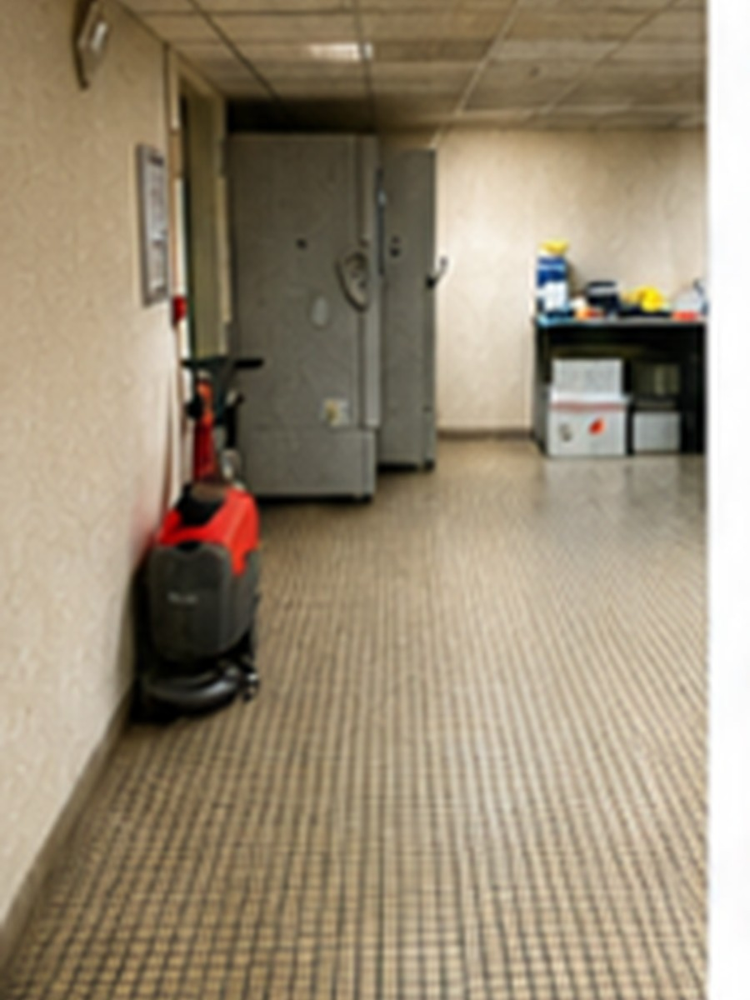
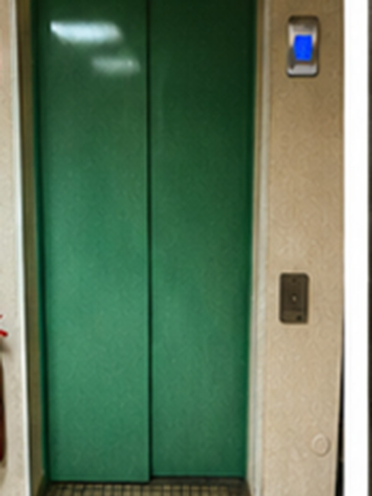

1
➜ Entrer
Entrée B14
Entrez par l’entrée B14.
Depuis l’entrée B14, suivez les repères ci-dessous dans l’ordre.
À la porte d’accès, utilisez la sonnette et attendez qu’un membre du personnel vous ouvre.
Consultez la procédure complète validée, directement depuis le site ou téléchargez la version Word.

Entrez par l’entrée B14.

Dans le hall, dirigez-vous vers l’ascenseur situé en face de vous.

Vérifiez la signalétique « TEP-IRM » placée à côté de l’ascenseur.

Prenez l’ascenseur et sélectionnez le niveau −1.

À la sortie, tournez immédiatement à droite.

Continuez tout droit jusqu’à la porte située au fond.

Placez-vous devant la porte d’accès.

Actionnez la sonnette et attendez l’ouverture par le personnel habilité.

Après l’ouverture, poursuivez dans le couloir technique.

Franchissez la porte verte.

Rejoignez le hall où se trouve le second ascenseur.

Empruntez le second ascenseur.

Sélectionnez le niveau 0.

À l’ouverture des portes, vous êtes arrivé au service CERMEP.